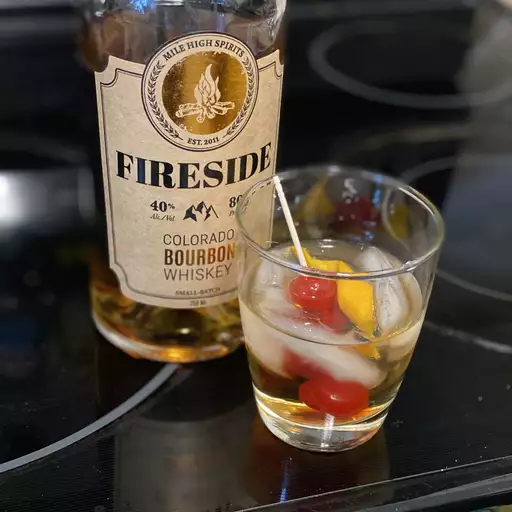

Back to homepage
Classic old fashioned
Description
TAn old fashioned is a classic whiskey cocktail with bitters, simple syrup, and fruit.
Experts believe the drink is called the "old fashioned" because it's one of the first widely known cocktails ever.
The name comes from people ordering the drink the "old-fashioned way.

Ingredients
- 2 teaspoons simple syrup
- 1 teaspoon water
- 2 dashes bitters
- 1 cup ice cubes
- 1 (1.5 fluid ounce) jigger bourbon whyskey
- 1 sclice orange
- 1 maraschino cherry
How do I do it
- Pour simple syrup, water, and bitters into a whiskey glass; stir to combine.
- Add ice cubes and pour in bourbon.
- Garnish with orange slice and maraschino cherry.